4BLOC – Blockchain
Anthony Graignic, avril 2024
gm 👋
et vous ?
Objectifs de la formation:
- Programmer des Blockchains
- Identifier les liens entre blockchain et intelligence artificielle
- Comprendre les intelligences collectives
Objectifs pédagogiques:
- Découvrir les principes d’intelligence collective
- Comprendre comment fonctionnent les Blockchains
- Savoir développer des applications dans la blockchain par l’intermédiaire de contrats
- Découvrir les possibilités offertes par la blockchain dans le domaine des systèmes d’information
Déroulement
jeudi 04 => vendredi 12
- Partie 1 : L’Intelligence collective principe d’intelligence artificielle
- Partie 2 : La construction de la blockchain
- Partie 3 : Les applications en mode crypto
évaluation
Projet (étude de cas) tout seul
3 heures
PARTIE 1 :
L’Intelligence collective principe d’intelligence artificielle
Définition
Une intelligence partout distribuée, sans cesse définie, coordonnée en temps réel, qui aboutit à une mobilisation effective des compétences

Personne ne sait tout,
tout le monde sait quelque chose
Les technologies ne peuvent pas résoudre des problèmes que les humains en s'organisant, ne connaissent pas, ou peu, résoudrent eux mêmes
Est-ce la technologie qui détermine la société ou l'inverse ?

Pour une entreprise créative et innovante
- Dynamiser la communication interne et le travail collaboratif
- Repenser la culture organisationnelle
- on ne cherche pas à tout prix le parfait consensus, mais la meilleure manière d’avancer.
=> bons outils pour aller au delà de l'intelligence collectée.
Valeurs clés
- Diversité des membres
- Collaboration et coopération
- Communication efficace
- Confiance et respect mutuel
- Apprentissage continu
- Leadership partagé
- Outils et technologies adaptés
- Culture organisationnelle favorable
- Objectifs clairs et partagés
- Processus décisionnels inclusifs
Intérêts
- Amélioration de la prise de décision
- la résolution de problèmes complexes,
- l'innovation,
- l'apprentissage
- le renforcement de la cohésion
- l'adaptation
- la réduction des biais cognitifs
- l'optimisation des ressources
- l'amélioration de la performance globale.
Modèle de la blockchain
- Création
- Modèle
- Intérêt et principe
La monnaie, une technologie ancienne

Sumer, -3500
Cauri, -1300 -> 1800
3 fonctions principales
- Unité de compte
- Intermédiaire des échanges
- Réserve de valeur
évolutions
- Internationalisation
- Contrôle de la monnaie
(Banque centrale) - Numérique
Avancées cryptographiques
1977 : Algorithme de cryptographie asymétrique RSA
1979 : Merkle Tree compression mechanism
1982 : Blind signatures for untraceable payments, David Chaum
1988 : The Crypto Anarchist Manifesto
1990 : Digicash, David Chaum
1991 : How to Time-stamp a Digital Document
1992 : ECDSA, Scott Vanstone (Certicom)
1998 : Faillite Digicash
1999 : Napster, audio p2p
2004 : Rpow, Hal Finney
Bitcoin
+Respect de la vie privée
+Non-falsifiable
+Evite les doubles dépenses
| Monnaie (liquide) | Monnaie (numérique) | Crypto | |
|---|---|---|---|
| Moyen d'échange | ✅ | ✅ | ✅ |
| Réserve de valeur | ✅ | ✅ | ✅ |
| Unité de compte | ✅ | ✅ | ✅ |
| Création | Banque Centrale | Dette | Automatique |
| Vie privée | ✅ | ❌ | ✅ |
| Pair à Pair | ❌ | ❌ | ✅ |
| Garantie légale, stabilité | ✅ | ✅ | ❌ |
Décentralisation
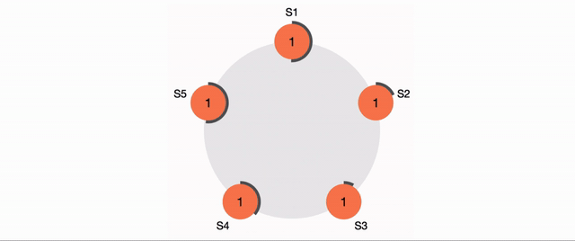fault-tolerant distributed systems
Immutabilité
Non-répudiation
Traçabilité
Les transactions partagées avec les utilisateurs
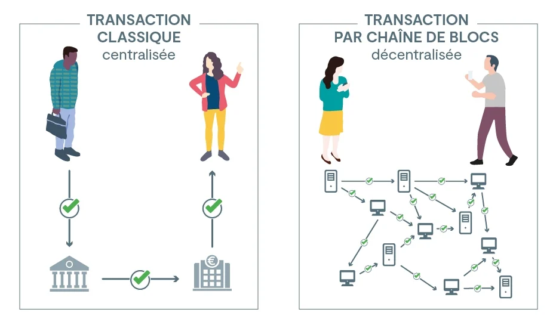©MEFR
Utilisations appliquées à l'IA
- Authenticité des données
- Supply chain
- DeFi
- Santé
- Propriété intellectuelle
Lien entre apprentissage automatique et blockchain
- ⚡️ Transparence et traçabilité
- ⚡️ Données décentralisées et immuables
- ⚡️ Confiance et vérifiabilité
- ⚡️ Contrats intelligents
Exemple : crédits carbone KlimaDAO
Exemple 2 : Blocknative
Avancées de l'IA dans l'analyse des données de la blockchain
- 🔗 Améliorations de la sécurité
- 🔗 Détection des fraudes et prévention des cyberattaques
- 🔗 Optimisation des contrats intelligents
- 🔗 Partage et monétisation des données
- 🔗 Prédiction des tendances du marché
Exemple: Dune
La recherche sur les big data dans les systèmes de blockchain
- Analyse et visualisation des données de la blockchain
- Optimisation des performances et scalabilité
- Améliorations des algo crypto et anonymat
- Intégration et interopérabilité
Exemple visualisation données : Ethereum state by paradigm.xyz
Exemple intégration : blobscan (EIP-4844)
Exemple OSINT : pod
Exemple DeFi: DefiLlama
PARTIE 2 :
La construction de la blockchain
Une blockchain c'est :
- Registre distribué
- Base de données
- Réseau pair à pair
- Ordinateur distribué
Caractéristiques :
- Mécanisme de consensus
- Finalité (dont checkpoint ?)
- Fork choice rule
- ---
- Ressources nécessaires
- Governance
- Interopérabilité
- Disponibilité des données
- Réseau
- Structure de données et encodage

Consensus et mécanisme de consensus
Problème des généraux byzantins
Consensus history
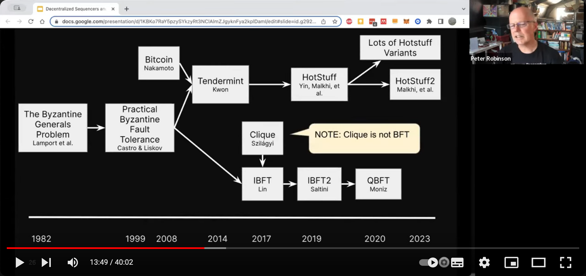- Proof of Stake & Delegated Proof of Stake
- Proof of Work
- Proof of Authority
- ...
Proof of Work
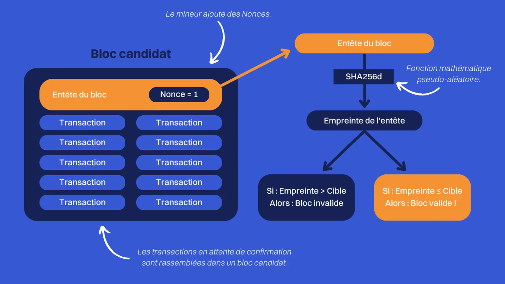Proof of Stake
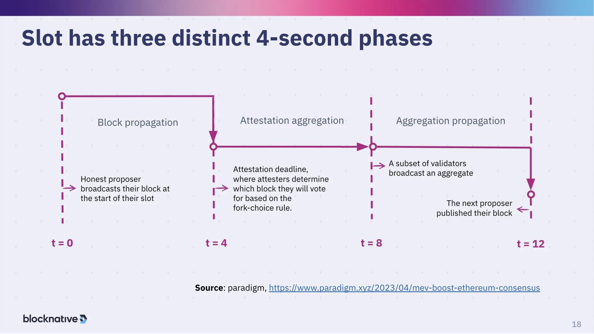Finalité
A transaction has "finality" on Ethereum when it's part of a block that can't change.
Bonus sur Ethereum
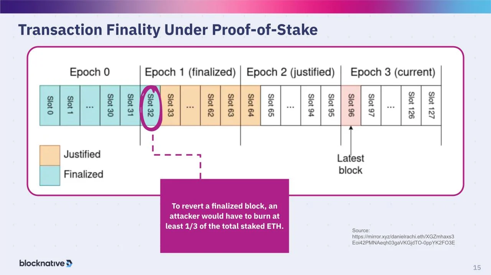Fork choice rule
Bitcoin : chaîne qui a la plus grande difficulté totale
Tendermint : chaîne qui a des blocs valides signés par 2/3 de l'enjeu
Ethereum : Single slot finality toutes les 15 minutes
Soft fork
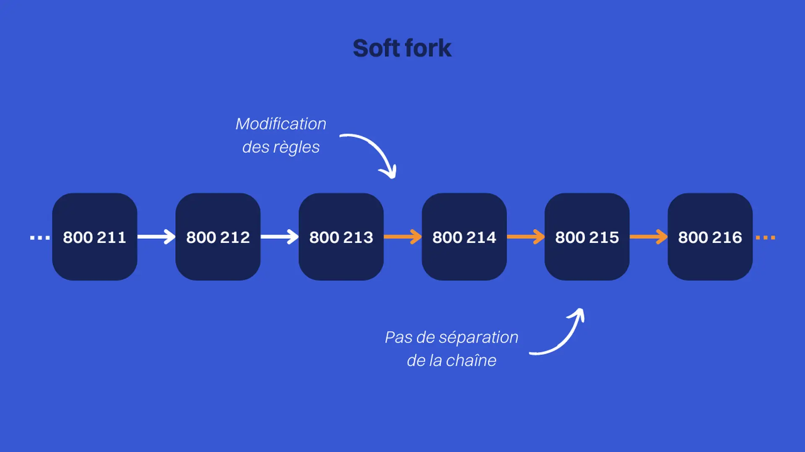Rétrocompatible e.g. upgrade pour mise à jour des règles de validation des blocs
Hard fork
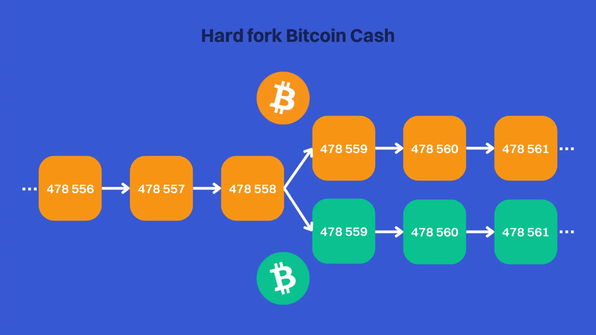Ressources full-node
ETH: 4-core CPU, 32Go RAM, 2TB SSD, BP 25Mbit/s
BTC: 2-core CPU, 8Go RAM, 1TB SSD, BP 25Mbit/s
Gouvernance
Une communauté de :
- Détenteurs d'Ether
- Utilisateurs d'application
- Développeurs d'application/d'outils
- Opérateurs de nœud
- Auteurs des EIPs
- Mineurs/Validateurs
- Développeurs du protocole
EIP-1
(Ethereum Improvement Proposal)

Type de blockchain
| Privée | Consortium | Publique | |
|---|---|---|---|
| Sans permission | ❌ | ❌ | ✅ |
| Consultation | Participants approuvés | Participants approuvés | Tout le monde |
| Ecriture | Participants approuvés | Participants approuvés | Tout le monde |
| Propriété | 1 entités | 1..n entités | Personne |
| Participants connus? | ✅ | ✅ | ❌ |
| Rapidité | ++ | + | - |
Interopérabilité
EVM ou non ?
Bridges, sidechain, validium, rollup?
Rollup
- Optimistic rollups
- Zero-Knowledge rollups

Architecture d'un noeud Ethereum

Signature

Fonction de hashage

SHA-256 (2), MD5...
Propriétés : uniformité, efficacité, collisions, déterminisme, plage de sortie
Accounts
- Compte détenu en externe (EOA) – contrôlé par toute personne ayant les clés privées
- Compte de contrat

Wallets
“Not your keys, not your coins”

HD Wallet et dérivation

BIP39 Seed mnemonic en utilisant PBKDF2 (Password Based Key Derivation Function 2)
Account abstraction
Transactions

{
from: "0xEA674fdDe714fd979de3EdF0F56AA9716B898ec8",
to: "0xac03bb73b6a9e108530aff4df5077c2b3d481e5a",
gasLimit: "21000",
maxFeePerGas: "300",
maxPriorityFeePerGas: "10",
nonce: "0",
value: "10000000000"
}
Comment faire une transaction ?

Comment faire une transaction ?
DEMO
Types de transactions: envoi, déploiement contrat, interaction contrat
EIP-2718: Typed Transaction Envelope(opens in a new tab)
Encodage Recursive Length Prefix (RLP)
RLP([nonce, gasPrice, gasLimit, to, value, data, v, r, s])Blocs

Gas

Network
Réseaux publics, éphémères, de tests...
ChainlistSmartcontracts
Simplement un programme exécuté sur la blockchain
(code=fonctions, données=état)
Smartcontracts
Smartcontracts coding
Some problems you should be aware of (and avoid):
- Reentrancy
- Send can fail
- Loops can trigger gas limit
- Call stack depth limit
- Timestamp dependency
Exemple d'application
Architecture of a web 3 application


Axes de recherche
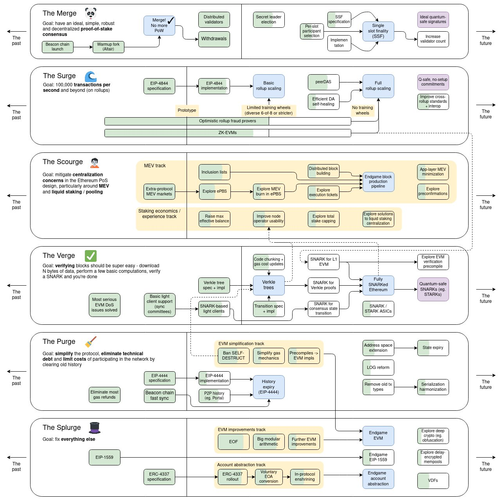Types de noeuds
- Archive node
- Light node
- Boot node

Diversité des clients des nœuds: logicielle
 Source :
clientdiversity.org
Source :
clientdiversity.org
Diversité des clients des nœuds: géographique
 Source :
nodewatch.io
Source :
nodewatch.io
Rôles
- Indexer
- Validator/Miner
- Relais MEV
Maximal Extractable Value (MEV)
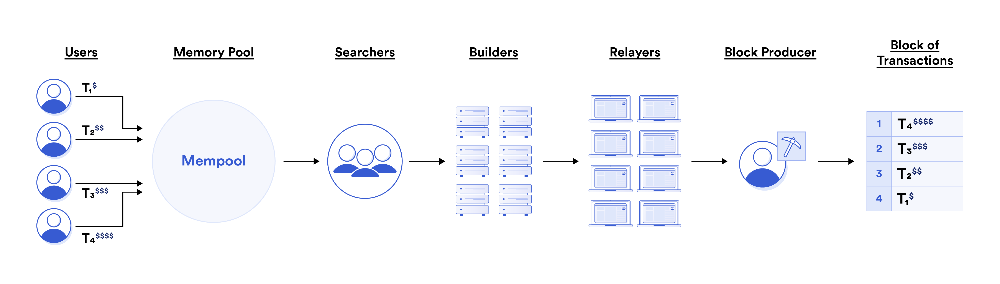Relais MEV

Types de MEV
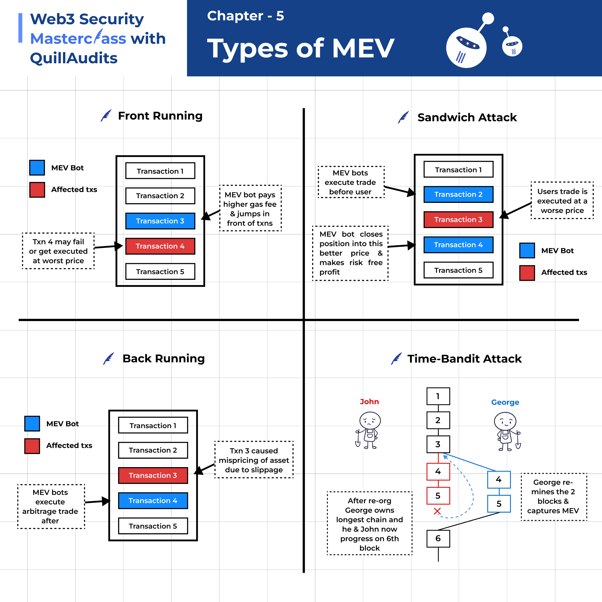Aussi gas golfing ...
Sybil resistance
 Source: Introducing a Fair Tax Method to Harden Industrial Blockchain Applications
against
Network
Attacks: A Game Theory Approach by Fatemeh Stodt and Christoph Reich
Source: Introducing a Fair Tax Method to Harden Industrial Blockchain Applications
against
Network
Attacks: A Game Theory Approach by Fatemeh Stodt and Christoph Reich
Quelques Attaques
- Attaque par devancement (Race attack, double dépense)
- Attaque à 51% ou attaque majoritaire
- Attaque Sybil ou attaque multi-identités
- Attaque rien à perdre (sur PoS, many-forks)
- Attaque re-entrante (contrats & prog. concurrente)
- Attaque sur IOTA (Mauvaise cryptographie)
Exemple
-
Mise en place d'un noeud eth sur le testnet Holešky avec eth-docker QuickStart
-
Utilisation de la lib Web-Ethereum-Defi pour de l'analyse données en python
PARTIE 3 :
Les applications en mode crypto
 https://dataalways.substack.com/p/endgame-perils-of-restaking
https://dataalways.substack.com/p/endgame-perils-of-restaking
Développement d’un cas concret : DAO
- Déploiement d'un contrat de Gouvernance entre tous les étudiants
- Déploiement d'un token ERC-20